Build a network with Packet Tracer
Scope:
- Configure internal network (router, end devices)
- Configure external network connections
- Configure server to enable DNS/DHCP services
Devices

Internal network configurations
1. Enable DHCP on router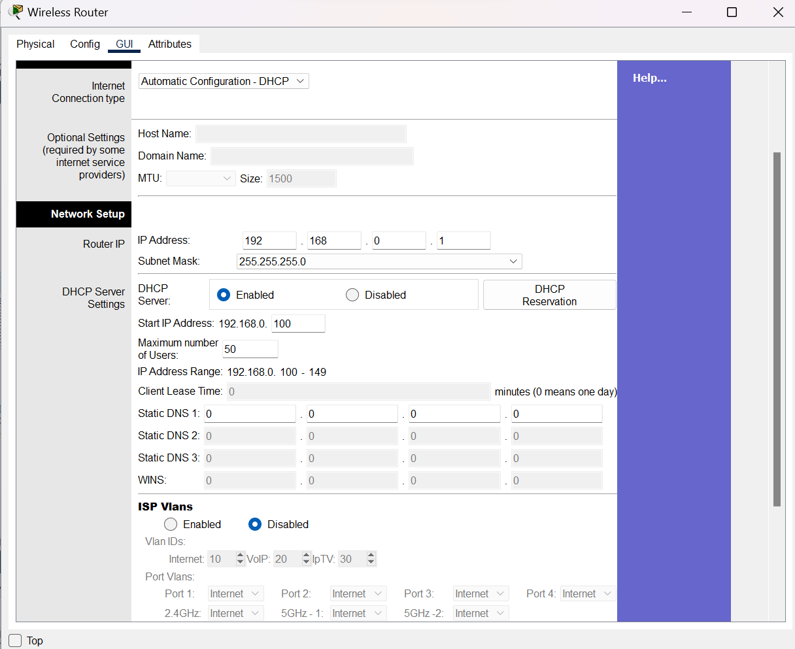
You have to enable DHCP on router to auto-assign the IP address to your internal devices, or else you have to assign it manually
2. Connect PC and Laptop to router
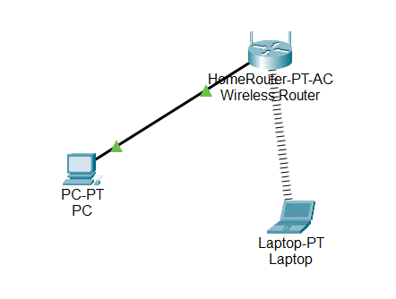
- For PC: use copper straight-through cable to connect to router using ethernet
- For Laptop: you can do the same as you did with the PC, or you can replace the ethernet interface with a wireless interface for Wifi
3. Check for connections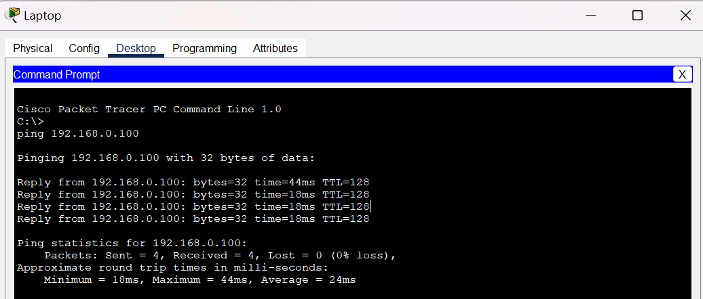
- Use ping command to check for connections, I am pinging PC with my Laptop
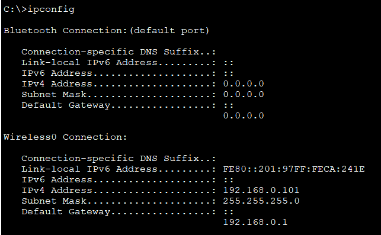- Use ipconfig to check the IP address, or see it in the "Config" tab
External network configurations
1. Connect through cable modem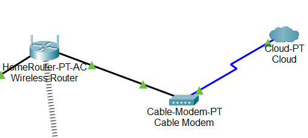
Because we use cable modem to connect to the ISP/CSP:
- Connect modem to router using straight-through cable.
- Connect the modem to the ISP using coaxial cable
2. Connect the server to the ISP/CSP
- Connect server and ISP/CSP using ethernet connection (straight-through cable) by default
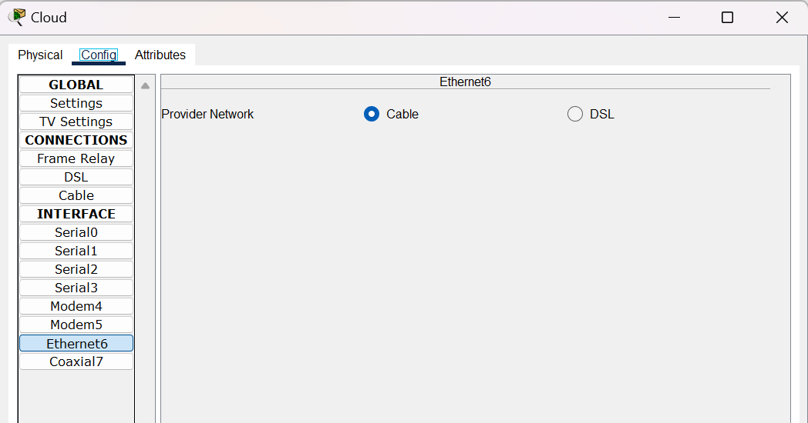Since we connect the server to the ISP/CSP using ethernet, we need to configure the "Ethernet6" tab in Cloud to "Cable"
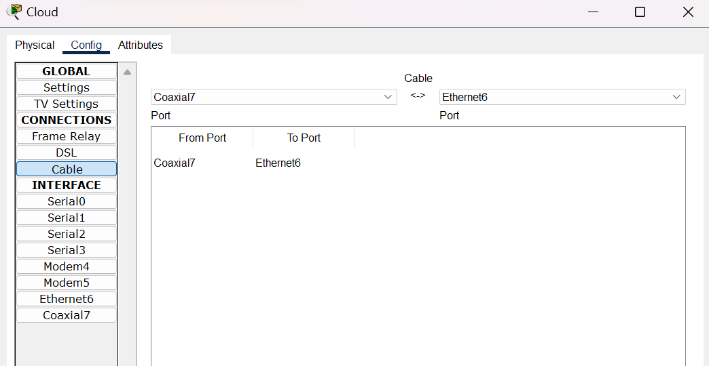We have to add a cable of port Coaxial(from ISP/CSP) to Ethernet6(server) to successfully connect to the server
Configure services in the server
1. Configure settings and interface of the server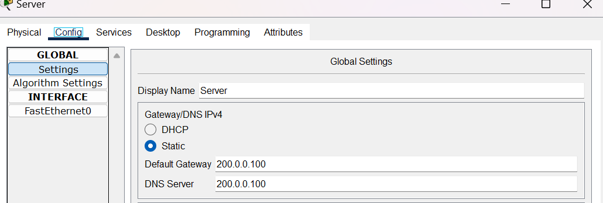
- Set to static
- The default gateway is the server IP address(public) because there is no internal network, it connects directly to the external network
- The "DNS server" is the server IP address because the server will provide the service
2. Create a DNS record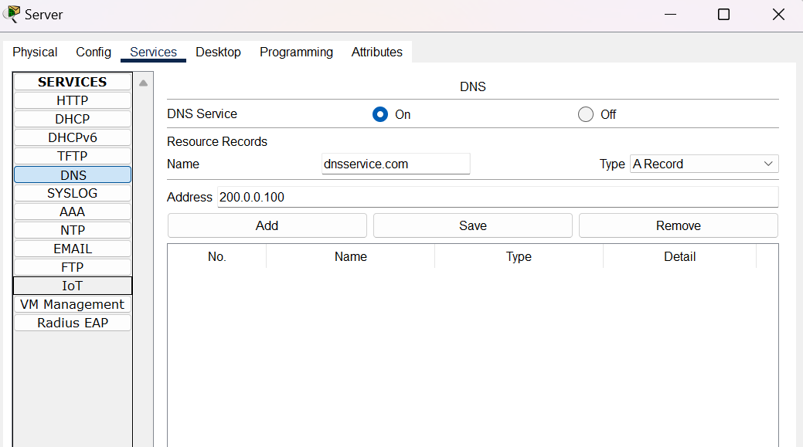
- Turn on DNS service
- The Address will be the IP address(public) of the server.
- Set any domain name you want
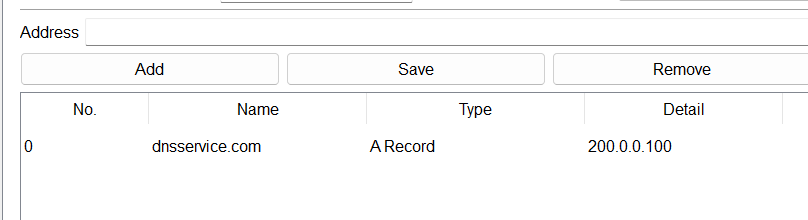- Add the record so it can be accessed
3. Configure DHCP service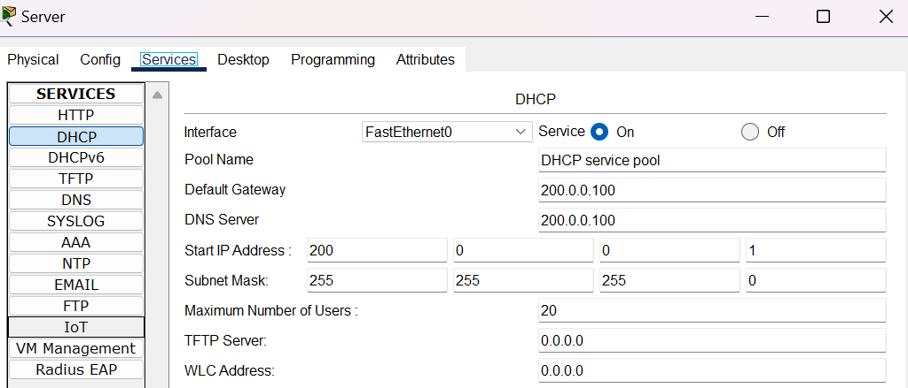
- Turn on DHCP service
- Configure the DHCP service
- Then add the DHCP service for it to work
*Note:- You have to change the settings of the Router to use the DHCP and the DNS service of the server
- You can test the connection by pinging the server
- You can test the DNS record by type the domain name in the browser